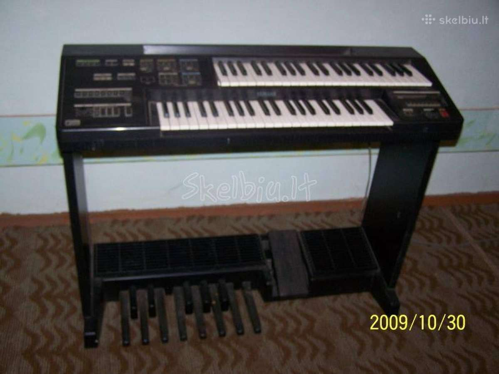

Welcome to sintezatorius
Sintezatoriai | Muzi.lt - Muzikos prekės
2020.10.30 03:32+370 645 08700 Susisiekite Scenos servisas - paslaugos Lietuviškai Lietuviškai English Patikusios prekės ( ) Muzikos prekės Prisijungti 0 Krepšelis / Tuščias Jūsų krepšelis × Jūsų krepšelyje nėra prekių GARSAS Bevielės sistemos Bevielės gitaros sistemos Bevielės headset sistemos Bevielės mikrofonų sistemos Bevielės In Ear sistemos Bevielės audio sistemos Bevielių sistemų komponentai Bevieliai mikrofonai Mikrofonai su lankeliu (headset) Imtuvai Efektų procesoriai Mikrofonai Vokaliniai Dinaminiai Kondensatoriniai Juostiniai Instrumentiniai Dinaminiai Mažos diafragmos Būgnams, perkusijai Pučiamiesiems Akustinems gitaroms Styginiams Gitaros kūbams Pianinui Studijiniai Headset (su lankeliu) Konferenciniai Matavimo Komplektai Video kameroms Priedai Stovai mikrofonams Laikikliai mikrofonams Energijos šaltiniai Kempinės, pop filtrai Šakotuvai Laidai +48V, pradiniai stiprintuvai Kolonėlės Aktyvios Žemų dažnių Komplektai, sistemos Studijinės Pasyvios Mobilios garso sistemos (su baterija) Instaliacinės Priedai Trikojai kolonėlių stovai Kolonėlių vamzdžiai Kolonėlių stovai su pagrindu Kolonėlių sieniniai laikikliai Priedai kolonėlių stovams Dėklai stovams Transportavimui Dėklai kolonėlėms Kolonėlių dalys, komponentai Studija Monitorinės kolonėlės Mikrofonai Dinaminiai Mažos diafragmos Plačios diafragmos Komplektai Garso plokštės Akustinės medžiagos Programinė įranga MIDI - USB sąsajos MIDI-USB valdikliai, kontroleriai, klaviatūros Priedai POP filtrai, kempinės Stovai studijiniams mikrofonams Laikikliai studijiniams mirkfonams Kolonėlių stovai XLR laidai JACK laidai MIDI laidai Pultai Analoginiai Skaitmeniniai Priedai Dėžės, dėklai Apšvietimas Grotuvai CD, MP3 Patefonai ir jų priedai Patefonai Adatos Dirželiai Kilimėliai Stiprintuvai Galvutės, laikikliai Diktofonai DJ valdikliai Ausinės In-ear Su lankeliu Stiprintuvai, šakotuvai Priedai, komponentai, dalys ausinėms Garsiakalbiai Aukštų dažnių Vidurinių dažnių Žemų dažnių Gitarų kūbams Garsiakalbių dalys Membranos Ruporai Stiprintuvai D.I. Box Matuokliai Megafonai Apsauginiai takeliai ŠVIESA Šviesos įranga ir jos priedai Lempos Prožektoriai Sekimo prožektoriai Stroboskopai Apšvietimas natoms, pultui Šviesos efektai Skaneriai Judančios galvos Lazeriai Disko rutuliai ir jų priedai LED juosta LED BAR Dūmų efektai Burbulų efektai Skystis Dūmų skystis Garų skystis Burbulų skystis Sniego skystis Dūmų kvepalai Skysčiai valymui Valdikliai, pultai Tvirtinimo detalės Stovai šviesoms Transportavimui Populiariausios prekės Mini lazeris RedGreen +RE 32,00 € Dūmų mašina FLM-1200 89,00 € Šviesos efektas Flash LED Double Derby 2x10W 4in1 79,00 € INSTRUMENTAI Gitaros Akustinės Dreadnought formos Jumbo, auditorium formos 12 Stygų gitaros Kairiarankiams Elektroakustinės Dreadnought formos Jumbo, auditorium formos 12 Stygų gitaros Kairiarankiams Įvairios elektro-akustinės gitaros Bosinės 4 stygų 5 stygų 4 stygų kairiarankiams 5 stygų kairiarankiams Elektrinės Stratokasteris Telekasteris Les Paulas SG, dvigubo išpjovimo Pusiau akustinės Įvairios Klasikinės 4/4 dydžio 3/4 dydžio 1/2 dydžio 1/4 dydžio Ukulėlės dydžio Kantri stiliaus Bandžos Mandolinos Havajų gitaros Rezonanso gitaros Nestandartinės gitaros Bevielės sistemos Efektai, pedaliukai, adapteriai Stiprintuvai, kubai Akustinėms gitaroms Elektrinėms gitaroms Bosinėms gitaroms Stygos Akustinei gitarai Bosinei gitarai Elektrinei gitarai Klasikinei gitarai Ukulėlei 12 kastygei gitarai Mandolinai Bandžai Priedai Mediatoriai Stovai-laikikliai Dėklai, futlerai, dėžės, lagaminai Elektrinėms gitaroms Akustinėms gitaroms Klasikinėms gitaroms Bosinėms gitaroms Gitaros efektams Ukulėlėms Mandolinoms Derintuvai, metronomai Diržai Kapodasteriai Slaidai Pakojai Kėdutės, suoleliai Kėdutės Laidai gitaroms DI Box Tilteliai Įvairūs Mikrofonai gitaroms Klavišiniai Skaitmeniniai pianinai Stacionarūs Nešiojami Sintezatoriai MIDI klaviatūros Akordeonai, armonikos Priedai Pianino kėdutės Pedalai Dėklai Stovai-laikikliai Metronomai Garso sistemos Ausinės Garso laidai MIDI laidai Apšvietimas natoms Įvairūs Styginiai Styginiai instrumentai Priedai Stygos Dėklai Antpetėliai, pabarzdėliai Atramėlės, tilteliai Įvairūs Metronomai Derintuvai, kamertonai Mikrofonai styginiams Apšvietimas natoms Ukulelės Soprano Koncertinės Tenoro Baritono Elektrinės Pučiamieji Saksofonai Trimitai Klarnetai Fliugelhornai Valtornos Alto (Tenor) Hornai Trombonai Kornetai Baritone Hornai Eufonijos Fagotai Obojai Tūbos Fleitos Dūdelės Okarinos Lūpinės armonikėlės Melodikos Įvairūs Priedai Dėklai Stovai, laikikliai Diržai, dirželiai Liežuvėliai Saksofonui tenorui Saksofonui altui Saksofonui sopranui Saksofonui sopranino Saksofonui baritonui Saksofonui bosui Liežuvėliai klarnetui Basset hornui Lyros Surdinos Muštukai Kamertonai, derintuvai Metronomai Priežiūros priemonės Įvairūs Mikrofonai pučiamiesiems Apšvietimas natoms Perkusija Ksilofonai, metalafonai Tamburinai Barškučiai, marakasai, žvangučiai, kabasa Trikampiai Kachonai Lėkštutės, varpeliai (chimes) Džiambės, bongo, būgneliai Komplektai, rinkiniai Lietutis, jūros ošimas Dambreliai Medinės lazdelės, vamzdžiai Kastanjetės Kalimbos Plaktukai, lazdelės, muštukai Toniniai varpeliai Mušamieji Akustiniai būgnai Skaitmeniniai būgnai Vaikiški būgnai Orkestro būgnai Lėkštės, gongai Ride Crash Hi-Hat Splash Komplektai China Gongai Bell Treniruokliai Priedai Stovai-laikikliai Pedalai Lazdelės Kėdutės Dėklai Plastikai Slopintuvai Metronomai Mikrofonai Įvairūs Batutos STYGOS LAIDAI Mikrofoniniai XLR - XLR XLR - JACK mini XLR - JACK mini XLR - mini XLR mini XLR - mini JACK Instrumentiniai Įvairūs Mini JACK - Mini JACK Mini JACK - JACK Mini JACK - XLR Kolonėlėms XLR - XLR XLR/m - JACK XLR/f - JACK JACK - JACK JACK - SPEAKON SPEAKON - SPEAKON Optiniai USB, Firewire Tinklui, internetui Video Dvigubi RCA - RCA RCA - JACK RCA - XLR JACK - JACK JACK - XLR XLR, maitinimas - XLR, maitinimas Magistralės, multicore MIDI DMX 3 PIN DMX laidai 5 PIN DMX laidai Elektros laidai, prailgintuvai Y - tipo, išsišakojantys JACK - 2 RCA JACK - 2 JACK JACK - 2 XLR Mini JACK - 2 RCA Mini JACK - 2 JACK Mini JACK - 2 XLR Mini JACK - 2 MINI JACK Jungtys Adapteriai, perėjimai Laidai be jungčių Priedai DĖKLAI PRIEDAI Stovai, laikikliai Gitaroms Kolonėlėms Trikojai kolonėlių stovai Kolonėlių vamzdžiai Kolonėlių stovai su pagrindu Kolonėlių sieniniai laikikliai Priedai kolonėlių stovams Kompiuteriui, telefonui Mikrofonams Stovai mikrofonams Laikikliai mikrofonams Priedai mikrofonų stovams Mušamiesiems Natoms Pučiamiesiems Sintezatoriams Šviesoms Daiktams Priedai stovams, laikikliams Kėdutės Pianino kėdutės, suoleliai Sulankstomos pianino kėdutės Nereguliuojamos pianino kėdutės Reguliuojamo aukščio keturkampės pianino kėdutės Reguliuojamo aukščio apvalios pianino kėdutės Hidraulinės pianino kėdutės Dvigubos pianino kėdutės Pianino kėdučių rėmai (korpusai) Sėdimoji dalis pianino kėdučių rėmams Būgnų kėdutės Sulankstomos kėdutės Diržai Metronomai, derintuvai Ausų kamštukai, kištukai Energijos šaltiniai Priežiūros reikmenys Apsauginiai takeliai Laikikliai eurosienelei Dovanų kuponai Perkamiausi priedai Stovas gitarai su laikikliu Stagg SG-A100BK 9,99 € Kėdutė Stagg DT-35 61,75 € 65,00 € SCENOS TECHNIKA Aliuminio konstrukcijos Viengubos fermos Dvigubos fermos Trikampės fermos Keturkampės fermos Dvigubų fermų sujungimai Trikampių fermų sujungimai Keturkampių fermų sujungimai Scenos stulpų viršunės Fermų padai Priedai Scenos, komplektai Stogai Platformos Pakylos Kojelės Laiptai Užvažiavimo konstrukcijos Priedai Tvorelės, turėklai Keltuvai, stovai ir priedai Įvairios konstrukcijos Sukabinimai Telferiai Apsauginiai takeliai Populiarios prekės AKCIJOS Kuponai Garsas Ausinės In-ear Su lankeliu Stiprintuvai, šakotuvai Priedai, komponentai, dalys ausinėms Bevielės sistemos Bevielės gitaros sistemos Bevielės headset sistemos Bevielės mikrofonų sistemos Bevielės In Ear sistemos Bevielės audio sistemos Bevielių sistemų komponentai Mikrofonai Vokaliniai Instrumentiniai Studijiniai Headset (su lankeliu) Konferenciniai Matavimo Komplektai Video kameroms Priedai Kolonėlės Aktyvios Žemų dažnių Komplektai, sistemos Studijinės Pasyvios Mobilios garso sistemos (su baterija) Instaliacinės Priedai Studija Monitorinės kolonėlės Mikrofonai Garso plokštės Akustinės medžiagos Programinė įranga MIDI - USB sąsajos MIDI-USB valdikliai, kontroleriai, klaviatūros Priedai Pultai Analoginiai Skaitmeniniai Priedai Stiprintuvai Grotuvai CD, MP3 Patefonai ir jų priedai Diktofonai DJ valdikliai D.I. Box Matuokliai Garsiakalbiai Aukštų dažnių Vidurinių dažnių Žemų dažnių Gitarų kūbams Garsiakalbių dalys Efektų procesoriai Megafonai Apsauginiai takeliai Šviesa Lempos Prožektoriai Sekimo prožektoriai Stroboskopai Apšvietimas natoms, pultui Šviesos efektai Skaneriai Judančios galvos Lazeriai Disko rutuliai ir jų priedai Konfeti patrankos LED juosta LED BAR Dūmų efektai Burbulų efektai Skystis Dūmų skystis Garų skystis Burbulų skystis Sniego skystis Dūmų kvepalai Skysčiai valymui Valdikliai, pultai Tvirtinimo detalės Stovai šviesoms Transportavimui Instrumentai Ukulelės Soprano Koncertinės Tenoro Baritono Elektrinės Gitaros Akustinės Elektroakustinės Bosinės Elektrinės Klasikinės Kantri stiliaus Nestandartinės gitaros Bevielės sistemos Efektai, pedaliukai, adapteriai Stiprintuvai, kubai Stygos Priedai Klavišiniai Skaitmeniniai pianinai Sintezatoriai MIDI klaviatūros Akordeonai, armonikos Priedai Mušamieji Akustiniai būgnai Skaitmeniniai būgnai Vaikiški būgnai Orkestro būgnai Lėkštės, gongai Treniruokliai Priedai Perkusija Ksilofonai, metalafonai Tamburinai Barškučiai, marakasai, žvangučiai, kabasa Trikampiai Kachonai Lėkštutės, varpeliai (chimes) Džiambės, bongo, būgneliai Komplektai, rinkiniai Lietutis, jūros ošimas Dambreliai Medinės lazdelės, vamzdžiai Kastanjetės Kalimbos Plaktukai, lazdelės, muštukai Toniniai varpeliai Įvairūs perkusiniai instrumentai Pučiamieji Saksofonai Trimitai Klarnetai Fliugelhornai Valtornos Alto (Tenor) Hornai Trombonai Kornetai Baritone Hornai Eufonijos Fagotai Obojai Tūbos Fleitos Dūdelės Okarinos Lūpinės armonikėlės Melodikos Įvairūs Priedai Styginiai Styginiai instrumentai Priedai Batutos Stygos Stygos akustinei gitarai Stygos elektrinei gitarai Stygos klasikinei gitarai Stygos bosinei gitarai Stygos dvylikastygei gitarai Stygos ukulėlei Stygos mandolinai Stygos bandžai Stygos smuikui, altui, violančelei, kontrabosui Laidai Mikrofoniniai XLR - XLR XLR - JACK mini XLR - JACK mini XLR - mini XLR mini XLR - mini JACK Instrumentiniai Kolonėlėms XLR - XLR XLR/m - JACK XLR/f - JACK JACK - JACK JACK - SPEAKON SPEAKON - SPEAKON Dvigubi RCA - RCA RCA - JACK RCA - XLR JACK - JACK JACK - XLR XLR, maitinimas - XLR, maitinimas Y - tipo, išsišakojantys JACK - 2 RCA JACK - 2 JACK JACK - 2 XLR Mini JACK - 2 RCA Mini JACK - 2 JACK Mini JACK - 2 XLR Mini JACK - 2 MINI JACK Magistralės, multicore MIDI DMX 3 PIN DMX laidai 5 PIN DMX laidai Optiniai USB, Firewire Tinklui, internetui Kompiuteriui, planšetei Video Įvairūs Mini JACK - Mini JACK Mini JACK - JACK Mini JACK - XLR Elektros laidai, prailgintuvai Jungtys Adapteriai, perėjimai Laidai be jungčių Apsauginiai takeliai Priedai Dėklai, daiktadėžės Transportavimo dėžės Dėklai, futliarai, krepšiai Gitaroms Ukulėlėms Mandolinoms Klavišiniams Akordionams Būgnams Pučiamiesiems Styginiams Garso kolonėlėms Apšvietimo stovams Mikrofonų stovams Kolonėlių stovams Instrumentų stovams Kompiuteriams ir kt. Gitaros stiprintuvams, kubams Komponentai, medžiagos, dalys Stalčių bėgeliai Furnitūra Etiketės Kilimėliai Easy Case sistema (be kniedžių) Kampai Įleidžiamos plokštelės Dažai, klijai, folijos Kojelės, padukai Rankenos Plokštės, lentos, fanera Įvairios juostos Ratukai Lankstai, vyriai Porolonas Sienelių pertvarų detalės Užraktai, spynos 19 colių amortizacinės sistemos Kitos įvairios dalys ir priedai daiktadėžėms 19 colių transportavimo dėžių priedai 19 colių apšvietimo priedai 19 colių panelės, plokštės 19 colių korpusai 19 colių stalčiai 19 colių padėklai 19 colių bėgeliai 19 colių elektros maitinimo komutatoriai 19 colių priedų tvirtinimo varžtai 19 colių priedų tvirtinimo veržės 19 colių priedų tvirtinimo poveržlės 19 colių priedų tvirtinimo rinkiniai Kiti įvairūs 19 colių dėžių priedai Priedai Stovai, laikikliai Gitaroms Kolonėlėms Kompiuteriui, telefonui Mikrofonams Mušamiesiems Natoms Pučiamiesiems Sintezatoriams Šviesoms Daiktams Priedai stovams, laikikliams Kėdutės Pianino kėdutės, suoleliai Būgnų kėdutės Sulankstomos kėdutės Diržai Metronomai, derintuvai Ausų kamštukai, kištukai Energijos šaltiniai Priežiūros reikmenys Apsauginiai takeliai Laikikliai eurosienelei Įvairūs aksesuarai Dovanų kuponai Scenos technika Scenos, komplektai Aliuminio konstrukcijos Viengubos fermos Dvigubos fermos Trikampės fermos Keturkampės fermos Dvigubų fermų sujungimai Trikampių fermų sujungimai Keturkampių fermų sujungimai Scenos stulpų viršunės Fermų padai Priedai Stogai Platformos Pakylos Kojelės Laiptai Užvažiavimo konstrukcijos Priedai Tvorelės, turėklai Keltuvai, stovai ir priedai Įvairios konstrukcijos Telferiai Užuolaidos ir jų priedai Apsauginiai takeliai Trosai, tvirtinimo diržai Sukabinimai Apkabos, karabinai NUOLAIDOS Savaitės pasiūlymai Mėnesio pasiūlymai Ekspozicinės prekės Komisinės prekės Į gamtą su gitara Dovanų kuponai Muzikos prekės Paieška Prisijungti 0 Krepšelis Meniu Muzi Prekės Instrumentai Klavišiniai Sintezatoriai
Sintezatoriai
Filtras Kaina, mažiausia - didžiausia Best sellers Aktualumas Pavadinimas, A - Z Pavadinimas, Z - A Kaina, mažiausia - didžiausia Kaina, didžiausia - mažiausia 24 12 24 36 Rodyti visus 1 2 Turime SintezatoriaiVaikiškas sintezatorius Casio SA-76
SA-76 59,00 € 44 klavišai Akcija! -11,00 € Turime SintezatoriaiVaikiškas sintezatorius Yamaha PSS-F30
PSS-F30 64,00 € 75,00 € Turime SintezatoriaiSintezatorius Yamaha PSR-F51
Yamaha PSR-F51 99,00 € Sintezatorius su akompanimentu -14,00 € Turime SintezatoriaiSintezatorius Yamaha PSR-E273
PSR-E273 155,00 € 169,00 € Naujas modelis Turime SintezatoriaiSintezatorius Casio CT-S300
CT-S300 179,00 € Turime SintezatoriaiSintezatorius Casio CT-X700 C7
CT-X700C7 209,00 € Turime SintezatoriaiSintezatorius Casio LK-S250
LK-S250 219,00 € Šviečiantys klavišai Turime SintezatoriaiKlavišinė gitara Yamaha SHS-500RD
SHS-500RD 259,00 € Turime SintezatoriaiSintezatorius Casio CT-X5000
CT-X5000 369,00 € Turime SintezatoriaiSintezatorius Yamaha PSR-EW410
PSR-EW410 389,00 € Sintezatorius su akompanimentu -244,00 € Turime SintezatoriaiSintezatorius Yamaha PSR-SX700
PSR-SX700 1 059,00 € 1 303,00 € -380,00 € Turime SintezatoriaiSintezatorius Yamaha PSR-SX900
PSRSX900 1 899,00 € 2 279,00 € Akcija! Pristatymas 1-4 sav. SintezatoriaiVaikiškas sintezatorius Casio SA-46
SA-46 42,00 € Akcija! -14,00 € Teirautis dėl pristatymo datos SintezatoriaiVaikiškas sintezatorius Yamaha PSS-E30
PSS-E30 69,00 € 83,00 € Pristatymas 1-4 sav. SintezatoriaiSintezatorius Casio CTK-240
CTK-240 75,00 € Pristatymas 1-4 sav. SintezatoriaiVaikiškas sintezatorius Casio SA-77
SA-77 79,00 € 44 klavišai Akcija! -14,00 € Teirautis dėl pristatymo datos SintezatoriaiVaikiškas sintezatorius Yamaha PSS-A50
PSS-A50 85,00 € 99,00 € Akcija! -36,00 € Teirautis dėl pristatymo datos SintezatoriaiSintezatorius Yamaha PSR-E360 MA
PSR-E360MA 189,00 € 225,00 € Akcija! -30,00 € Turėsime 2020 11 16 SintezatoriaiSintezatorius Yamaha EZ-220
Yamaha EZ-220 189,00 € 219,00 € Sintezatorius su akompanimentu -20,00 € Pristatymas 4-8 sav. SintezatoriaiSintezatorius Yamaha PSR-E363
Yamaha PSR-E363 199,00 € 219,00 € Sintezatorius su akompanimentu Teirautis dėl pristatymo datos SintezatoriaiSintezatorius Yamaha PSR-E360 DW
PSR-E360DW 219,00 € Turėsime 2020-11-09 SintezatoriaiSintezatorius Yamaha PSR-E373
PSR-E373 239,00 € Naujas modelis! Prekyboje nuo Spalio mėnesio Turėsime 2020 gruodžio mėn. SintezatoriaiSintezatorius Yamaha PSR-EW300
Yamaha PSR-EW300 259,00 € Sintezatorius su akompanimentu Akcija! Teirautis dėl pristatymo datos SintezatoriaiSintezatorius Yamaha PSR-E463
PSR-E463 295,00 € Sintezatorius su akompanimentu Rodoma 1-24 iš 33 prekės(-ių) 1 2Sintezatoriai
Išvalyti viską GERAIPrekės ženklas
Casio (8) KETRON (1) Yamaha (24)Kaina
42,00 € - 3 695,00 €
Garso galia (rms)
30W (1)Garsų kiekis
997 garsų + 58 perkusija/SFX + 480 XG garsų (1)Grotuvas
WAV (1)Prieinamumas
Neturime (4) Yra sandėliuose (21)Spalvos
Juoda (1)Prenumeruokite nuolaidas ir naujienas
Informacija
Apie mus Tapkite atstovu Įmonės rekvizitai Aplinkosaugos pranešimas Atšaukimo sąlygos Pristatymas ir apmokėjimas Draugų kortelė Privatumo politika TaisyklėsNaudinga
Svetainės žemėlapis Populiariausios prekės Naujos prekės GamintojaiPaskyra
Užsakymų istorija Užsakymai be registracijos Mano paskyra Prisijungimas AdresaiKontaktai
Muzi.lt | UAB Scenos servisas Kauno g. 15, Marijampolė, LT-68178 +370 645 08700 Susisiekite parašydami pranešimąĮmonės kodas: 300646910
PVM kodas: LT100003432810
El. paštas:
Fizinės parduotuvės darbo laikas:
I-V: 10:00-18:00, VI: 10:00-14:00, VII: nedirbameĮmonės kodas: 300646910
PVM kodas: LT100003432810
El. paštas:
Fizinės parduotuvės darbo laikas:
I-V: 10:00-18:00,
VI: 10:00-14:00,
VII: nedirbame
© 2018 Muzi.lt | UAB „Scenos servisas“.
Turėtumėte prisijungti arba sukurti paskyrą ×Pridėkite prekės prie patikusių ir galėsite nusipirkti jas vėliau
Prisijunkite per Facebook Sign in with Google Neturi paskyros? Sukurkite čia Prekė pridėta prie patikusiųjų Prekė pridėta prie palyginimo.Informuojame, kad šioje svetainėje yra naudojami slapukai (angl. cookies). Toliau naršydami svetainėje arba paspausdami mygtuką Sutinku Jūs sutinkate su slapukų naudojimu. Daugiau informacijos apie slapukus galite rasti čia .
Sutinku Uždaryti